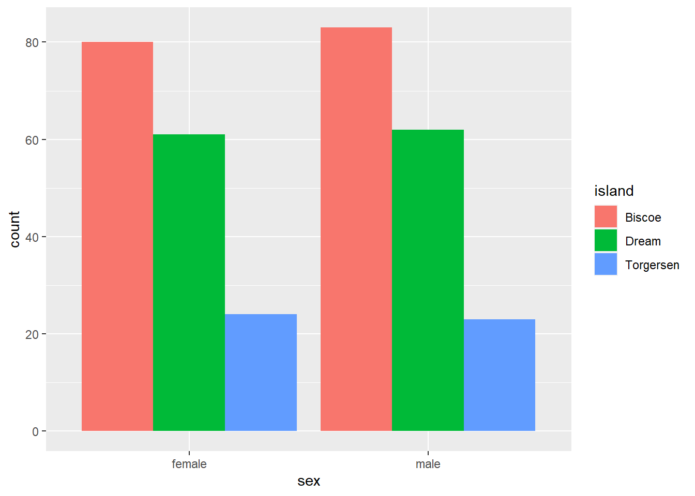

library(tidyverse)Quarto & Plotly
R: Prepare data
data <- palmerpenguins::penguins %>%
mutate(across(where(is.factor), as.character)) %>%
filter(!is.na(sex))data %>%
ggplot(aes(x = sex, group = island, fill = island)) +
geom_bar(position = position_dodge())
head(data)# A tibble: 6 × 8
species island bill_length_mm bill_depth_mm flipper_l…¹ body_…² sex year
<chr> <chr> <dbl> <dbl> <int> <int> <chr> <int>
1 Adelie Torgersen 39.1 18.7 181 3750 male 2007
2 Adelie Torgersen 39.5 17.4 186 3800 fema… 2007
3 Adelie Torgersen 40.3 18 195 3250 fema… 2007
4 Adelie Torgersen 36.7 19.3 193 3450 fema… 2007
5 Adelie Torgersen 39.3 20.6 190 3650 male 2007
6 Adelie Torgersen 38.9 17.8 181 3625 fema… 2007
# … with abbreviated variable names ¹flipper_length_mm, ²body_mass_gOJS: Expose data for OJS
ojs_define(data = transpose(data))d3 is needed for grouping / aggregation
d3 = require("d3-array")Plotly = require("https://cdn.plot.ly/plotly-2.16.1.min.js")Inputs.table(data)Aggregate (with JS / D3)
Goal: reduce data to group counts with JavaScript
This way we preserve runtime reactivity and don’t need to rely on static R inputs
Group by Species & Sex, Count Totals (length)
data_aggregated = d3
.flatRollup(
data,
(facet) => facet.length, // index: 2
(row) => row.island, // index: 0
(row) => row.sex // index: 1
)
// abstraction / parametarisation for Plotly (x,y, name) here
// .map((entry) => ({ island: entry[0], sex: entry[1], n: entry[2] }))
.map((entry) => ({ name: entry[0], x: entry[1], y: entry[2] }))
.sort((a,b) => a.name.localeCompare(b.name)) // to put facet names in A-Z orderdata_grouped = d3.group(data_aggregated, (d) => d.name)Facet Result Template
Create a template for an object for a single facet (~ trace)
toVars = ["x", "y", "name", "type"]resultObject = ({})toVars.forEach((variable) => (resultObject[variable] = []))// the manual mapping is only necessary if you don't abstract during aggregation
fromVars = [
{from: "sex", to: "x"},
{from: "n", to: "y" }
]Aggregate Facets
result = [...data_grouped.entries()].map((trace) => {
const traceObj = JSON.parse(JSON.stringify(resultObject)); // copy the Object template
traceObj.name = trace[0]; // facet's name / Map's key (here: island)
traceObj.type = "bar"; // TODO: make global param
traceObj.text = trace[1].map((entry) => `n: ${entry.y}`); // TODO: make n a param
trace[1].forEach((entry) => {
// fromVars.forEach((mapping) => {
// traceObj[mapping.to].push(entry[mapping.from]);
["x", "y"].forEach((mapping) => {
traceObj[mapping].push(entry[mapping]);
});
});
return traceObj;
})Plot data with Plotly
Plot Options
options = ({
title: "Count of Penguins by Gender & Island",
barmode: doStack ? "stack" : "group" // "group", "stack", "relative"
})Reactive Stack Toogle
Plotly Plot
Plotly.newPlot("plot-canvas", result, options)